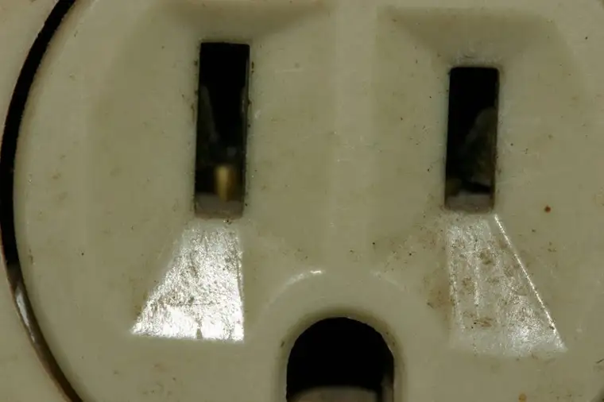

According to my current phone plan, I can’t upgrade to a new cell phone until the spring. Which means I have to suffer through my current need to remain near an outlet or charging source if I want to continue using my phone until that time.
{kind=link}
In addition, my laptop battery was going low, so I ordered a new one, and the new one doesn’t seem a whole lot better. Yes, that’s a touch of despair you’re reading.
So lately I’ve been feeling a little inconvenienced by my dependency on outlets — almost trapped in a way. I can’t go too long with either of my main sources of communication without running to find an outlet.
At a coffee shop, I size up the joint to see whether it has adequate outlet-age before I can allow myself to settle in. I’ve been known to race to certain spots in order to assure my trip there hasn’t been wasted.
At home, while doing my daily writing work, I’m often running to beat the warning telling me if I don’t find an electricity source soon, I’ll be cut off.
And the yellow bars indicating an impending shutdown of my phone seem to come at the most inconvenient times, and far too frequently.
In some cases, I’ve been in a particularly precarious situation over this, especially when it comes to my phone. This summer, when I was stalled at an airport, I couldn’t communicate my delays to my family at home until I’d found an outlet, which were in high demand. I finally scoped one out in a most inconspicuous place, then guarded it like the neighborhood watchdog.
 |
| Ding ding ding!!! Outlet sighting! |
{kind=link}
I don’t like this feeling of being so dependent on an outlet. Even as I’m typing this post, I’m realizing the juice is waning and I won’t make it through to the end without a recharge. So off I go in search of the three-holed monster.
Okay, maybe I’m being a little dramatic, but this electricity dependency does seem to be controlling my life more than seems right. Recently, however, while ruminating over my situation, the thought came to me that this is analogous to my dependency on something else: God.
I can’t get too far in any given day without needing to plug into THE source of life. For bits, I go off on my own, thinking I can do it just fine, charging ahead, and then, bam, I’m pulled off course, and sent flying to the nearest “outlet of divinity.”
This might constitute the daily meditation in my “Magnificat” magazine, or a moment or two of prayer grabbed midday, or rearranging my day to go to Mass or Adoration. It could even just be some devotional reading or a book that is spiritually edifying. Sometimes, it’s the act of writing about something that’s been inspiring.
No matter what it is, this I know: I need God to help my life work, not in the same degree as I need electricity to ensure my earthly communication and work happen. No, much more than this.
I know my electricity woes are what my kids would call a “first world problem.” It’s relative for me, and a big pain, but it’s also temporary. In time, I’ll have a new phone, a better laptop battery. These things will resolve. And yet, I’ll always need some sort of way to stay charged up.
And so it is with my life with God. I need HIM! Not just every other day, but every minute of every day. And that’s okay.
{kind=link}
In this mini-revelation, I’ve been able to turn this outlet-attached element of my life into something meaningful. Now, whenever I’m running to find a charging source, I’m going to have it be a reminder of the supreme source of energy, and as often (more than) I go on a frantic outlet search, I’m going to keep plugging into the source of love and life that will never lose its charge.
Q4U: What is your number-one go-to outlet for a spiritual recharge?
{kind=link}
{kind=link}